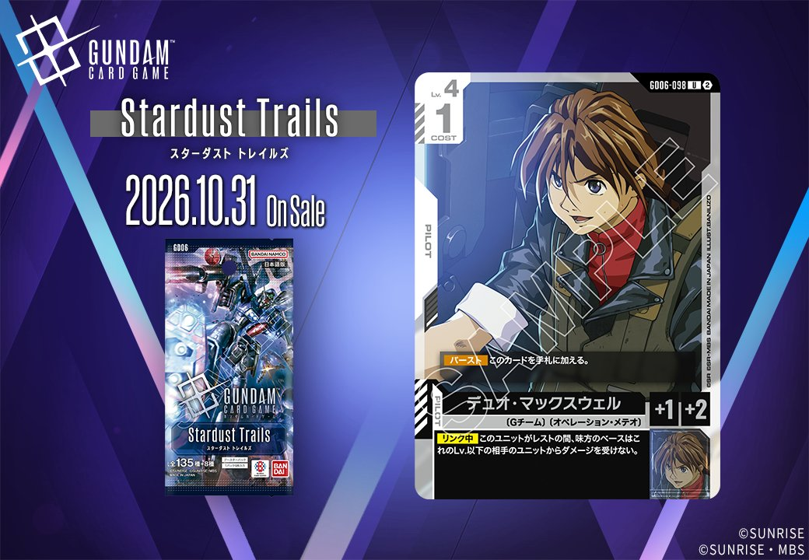

GD06「Stardust Trails」より、同日公開のUNITとPILOTがリンクで結ばれる組合せを紹介します。UNIT「ガンダムデスサイズヘル(EW版)」(GD06-072)はリンク条件に「デュオ・マックスウェル」を指定しており、同時収録されるPILOT「デュオ・マックスウェル」(GD06-098)とリンクが成立する2枚構成です。いずれも白のカードで、発売日は2026年10月31日となっています。

デュオ・マックスウェル (GD06-098)
| 色 | 白 | タイプ | PILOT |
| Lv | 4 | コスト | 1 |
| 補正 AP | 1 | 補正 HP | 2 |
| 特徴 | 〔Gチーム〕、〔オペレーションメテオ〕 | ||
効果: 【バースト】このカードを手札に加える。【リンク中】このユニットがレストの間、味方のベースはこれのLv.以下の相手のユニットからダメージを受けない。
COST1でAP1/HP2の白のGチーム/オペレーションメテオパイロット。【リンク中】レストの間、味方のベースをこのLv.4以下の相手ユニットからのダメージから守る効果を持ち、ベースを軸にした受け寄りの構築で機能します。 同日公開の「ガンダムデスサイズヘル(EW版)」(GD06-072)とリンクが成立し、同一ユニット上で運用可能。デスサイズヘル側の【破壊時】でトラッシュのLv.5以下のコマンド回収を狙える点も、Gチームをまとめた白系デッキで噛み合います。 発売は2026-10-31。ベース保護という守備的効果は用途が限定的ですが、低コストでリンク要員を兼ねられる点は評価できます。

ガンダムデスサイズヘル(EW版) (GD06-072)
| 色 | 白 | タイプ | UNIT |
| Lv | 5 | コスト | 3 |
| AP | 5 | HP | 3 |
| 特徴 | 〔Gチーム〕、〔プリベンター〕 | ||
| リンク条件 | 「デュオ・マックスウェル」 | ||
効果: 【セット中】【破壊時】このユニット以外の、〔Gチーム〕/〔プリベンター〕の自分のユニットがいるなら、自分のトラッシュのLv.5以下のコマンドカード1枚を選んでもよい。それを手札に加える。
ガンダムデスサイズヘル(EW版)(GD06-072)は、Lv.5/COST3/AP5/HP3の白ユニットで、【破壊時】に他の〔Gチーム〕/〔プリベンター〕ユニットがいればトラッシュのLv.5以下のコマンド1枚を回収できる。破壊されても手札に還元でき、〔Gチーム〕特徴を並べる白デッキとの噛み合いが良い。 リンク相手「デュオ・マックスウェル」(GD06-098)を搭載すれば【リンク中】効果でレスト時に味方ベースを守れるため、同一ユニット上での併用が構築上自然だ。2026-10-31発売のStardust Trails収録。


関連カード
-
 ウイングガンダムゼロ（EW版）(GD05-067)白系デッキ内採用率1.1% (68デッキ)
ウイングガンダムゼロ（EW版）(GD05-067)白系デッキ内採用率1.1% (68デッキ) -
 ヒイロ・ユイ(GD05-098)白系デッキ内採用率0.3% (21デッキ)
ヒイロ・ユイ(GD05-098)白系デッキ内採用率0.3% (21デッキ) -
 カトル・ラバーバ・ウィナー(GD05-100)白系デッキ内採用率0.3% (19デッキ)
カトル・ラバーバ・ウィナー(GD05-100)白系デッキ内採用率0.3% (19デッキ) -
 ガンダムデスサイズヘル（EW版）(GD05-078)白系デッキ内採用率0.1% (7デッキ)
ガンダムデスサイズヘル（EW版）(GD05-078)白系デッキ内採用率0.1% (7デッキ) -
 リーオー(GD05-077)白系デッキ内採用率0.1% (7デッキ)
リーオー(GD05-077)白系デッキ内採用率0.1% (7デッキ) -
 火消しの風(GD05-119)白系デッキ内採用率0.2% (12デッキ)
火消しの風(GD05-119)白系デッキ内採用率0.2% (12デッキ) -
デュオ・マックスウェル(GD06-098)NEW白系 — リンク先（新カード）
-
 デュオ・マックスウェル(GD01-090)緑系デッキ内採用率1.1% (68デッキ)
デュオ・マックスウェル(GD01-090)緑系デッキ内採用率1.1% (68デッキ) -
 デュオ・マックスウェル(GD01-090_p1)緑系デッキ内採用率0% (0デッキ)
デュオ・マックスウェル(GD01-090_p1)緑系デッキ内採用率0% (0デッキ) -
 デュオ・マックスウェル(GD01-090_p2)緑系デッキ内採用率0% (0デッキ)
デュオ・マックスウェル(GD01-090_p2)緑系デッキ内採用率0% (0デッキ)